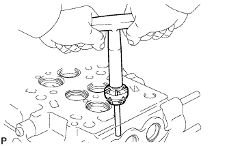
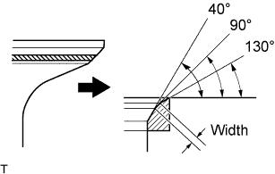
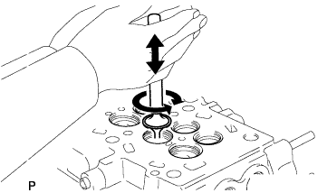
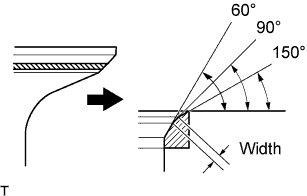
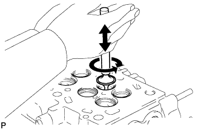

CYLINDER HEAD > REPAIR |
| 1. REPAIR INTAKE VALVE SEAT |
 |
Using a 90° cutter, resurface the valve seat so that the valve seat width is more than the specification.
 |
Using 40° and 130° cutters, correct the valve seat so that the valve contacts the entire circumference of the seat. The contact should be in the center of the valve seat, and the valve seat width should be maintained within the specified range around the entire circumference of the seat.
 |
Hand-lap the valve and valve seat with an abrasive compound.
Check the valve seating position.
| 2. REPAIR EXHAUST VALVE SEAT |
Using a 90° cutter, resurface the valve seat so that the valve seat width is more than the specification.
 |
Using 60° and 150° cutters, correct the valve seat so that the valve contacts the entire circumference of the seat. The contact should be in the center of the valve seat, and the valve seat width should be maintained within the specified range around the entire circumference of the seat.
 |
Hand-lap the valve and valve seat with an abrasive compound.
Check the valve seating position.